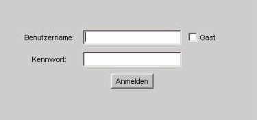
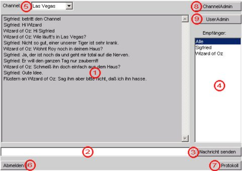

Kapitel 1: Benutzung des Chatclients(FAQ)
-
1.1 Anmelden.
-

Wenn Sie sich bei Juliet anmelden möchten, geben Sie im Anmeldefenster
im Feld "Benutzername" Ihren Benutzernamen an und tragen im Feld
"Kennwort" Ihr Kennwort ein, sofern Sie ein Benutzerkonto bei Juliet besitzen.
Besitzen Sie noch kein Benutzerkonto, dann können Sie sich als
Gast anmelden, indem Sie sich einen Benutzernamen aussuchen, diesen
im Feld "Benutzername" eintragen und die Option "Gast" wählen.
Ist Ihre Anmeldung erfolgreich, so sind Sie angemeldet und gelangen
ins Hauptfenster des Chats.
-
1.2 Das Hauptfenster
-

- Chatfenster
- Eingabezeile
- Knopf "Nachricht senden"
- Benutzerliste
- Channelauswahl
- Knopf "Abmelden"
- Knopf "Protokoll"
- Knopf "ChannelAdmin" (Administratorfunktion)
- Knopf "UserAdmin" (Administratorfunktion)
-
1.3 Chatten
-
Sie wollen einfach mit den anderen Teilnehmern im Raum chatten?
Um eine Nachricht in den Raum zu stellen, geben Sie diese in die
Eingabezeile ein und stellen Sie sicher, das in der Benutzerliste
"Alle Benutzer" markiert ist.
Bestätigen Sie danach mit der Eingabetaste oder klicken Sie "Nachricht senden".
Ihre Nachricht wird nun im Chatfester angezeigt und kann von
allen Teilnehmern im Raum gelesen werden.
-
1.4 Channel wechseln
-
Sie möchten gerne in einen anderen Channel wechseln?
Dazu klicken sie einfach auf die Channelauswahl und wählen einen neuen Channel aus.
-
1.5 Flüstern
-
Sie möchten mit einem anderen Teilnehmer im Channel ein Privatgespräch
führen, von dem die anderen Teilnehmer nichts mitbekommen sollen?
Dazu tippen Sie Ihre Nachricht in die Eingabezeile ein, markieren in der
Benutzerliste den Teilnehmer, dem Sie die Nachricht senden möchten und
betätigen die Eingabetaste oder klicken auf "Nachricht senden".
Beachten Sie bitte, dass Ihre nächste Nachricht wieder öffentlich ist.
-
1.6 Chat mitscheiden
-
Sie möchten einen Mitschnitt Ihres geführten Chats haben?
Dazu klicken Sie auf "Protokoll" und ein Fenster mit dem von Ihnen geführten Gesprächen
erscheint.
Den Text in diesem Fenster können Sie einfach mit der Maus markieren,
kopieren und in jeden gängigen Texteditor mit wieder einfügen.
-
1.7 Abmelden
-
Sie haben genug gechattet und wollen sich abmelden?
Klicken Sie dazu einfach nur auf den Knopf "Abmelden".